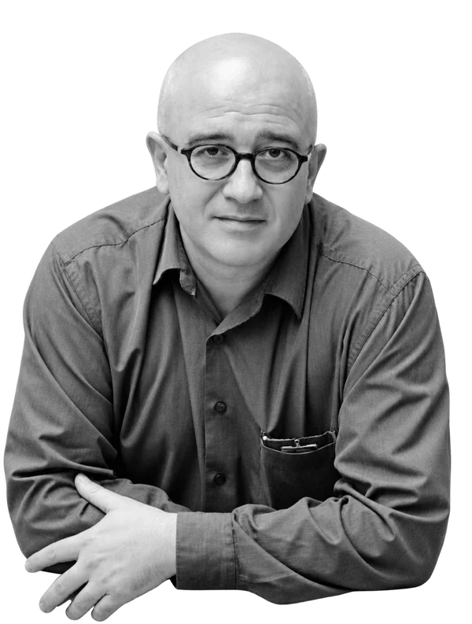
Professor Antonio (Toni) Vidal-PuigPrincipal Investigator Investigates how obesity leads to insulin resistance, diabetes and cardiometabolic disease, with a focus on adipose tissue expandability, lipotoxicity and brown fat thermogenesis.View profileMeet our team
Our laboratory brings together researchers from molecular biology, physiology, bioinformatics, and clinical medicine, united by a shared interest in the mechanisms of metabolic disease.
Explore our research interests and backgrounds.
18 team members
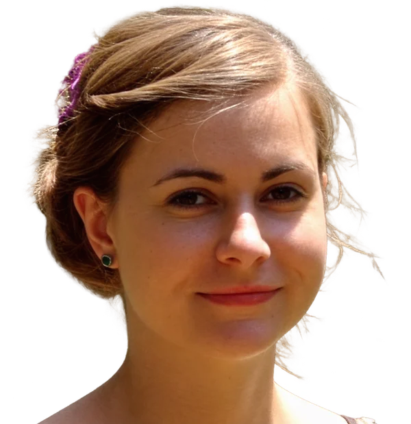
Katie FisherPersonal Assistant Personal assistant to Professor Toni Vidal-Puig at TVPlab.View profile Mark CampbellScientific Management Lead
Leads the scientific and operational management of mouse metabolic and cardiometabolic phenotyping programmes, coordinating resources and improving research workflows and quality.View profile
Mark CampbellScientific Management Lead
Leads the scientific and operational management of mouse metabolic and cardiometabolic phenotyping programmes, coordinating resources and improving research workflows and quality.View profile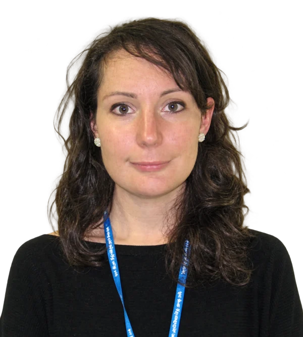
Dr. Vanessa PellegrinelliPostdoctoral Research Associate Studies how adipose tissue structure and extracellular matrix remodelling shape tissue plasticity and function, including fibro-inflammation and impaired brown fat thermogenesis.View profile Dr. Sergio Rodriguez-CuencaAssistant Research Professor
Explores lipid remodelling, mitochondrial function, peroxisomes and lipid droplets to understand adipose tissue metabolism and insulin resistance in obesity and metabolic disease.View profile
Dr. Sergio Rodriguez-CuencaAssistant Research Professor
Explores lipid remodelling, mitochondrial function, peroxisomes and lipid droplets to understand adipose tissue metabolism and insulin resistance in obesity and metabolic disease.View profile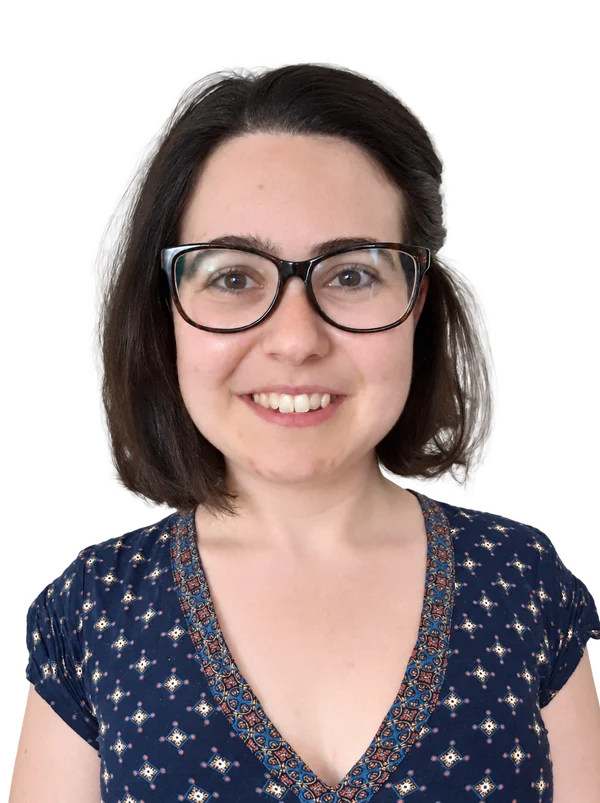
Dr. Sonia Rodriguez-FernandezPostdoctoral Research Associate Investigates the molecular steps that control human brown adipocyte differentiation and activation, seeking pathways that could increase brown fat recruitment and thermogenesis.View profile Dr. Guillaume BidaultPostdoctoral Research Associate
Studies how macrophage lipid synthesis and remodelling regulate inflammation, and how these immune-cell processes contribute to the cardiometabolic complications of obesity.View profile
Dr. Guillaume BidaultPostdoctoral Research Associate
Studies how macrophage lipid synthesis and remodelling regulate inflammation, and how these immune-cell processes contribute to the cardiometabolic complications of obesity.View profile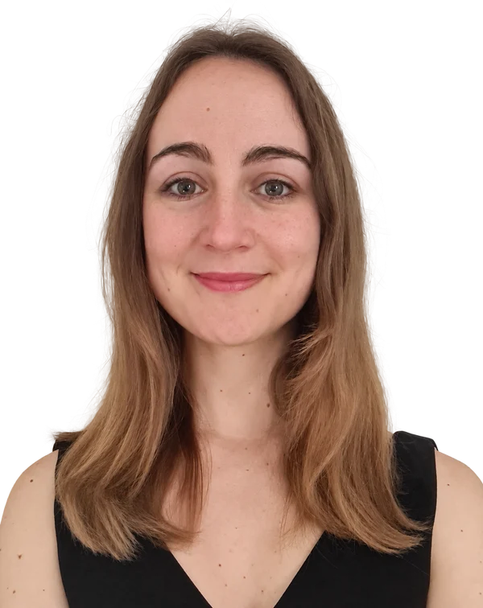
Dr. Isabel FusterPostdoctoral Research Associate Investigates how macrophages sense excess lipids and adapt their metabolism, exploring their roles in inflammation, fibrosis and metabolic syndrome and their potential as therapeutic targets.View profile Dr. Hao JiaPostdoctoral Research Associate
Studies how lipid metabolism in different macrophage populations influences the progression of fatty liver disease, focusing on membrane remodelling and new lipid synthesis in MASLD and MASH.View profile
Dr. Hao JiaPostdoctoral Research Associate
Studies how lipid metabolism in different macrophage populations influences the progression of fatty liver disease, focusing on membrane remodelling and new lipid synthesis in MASLD and MASH.View profile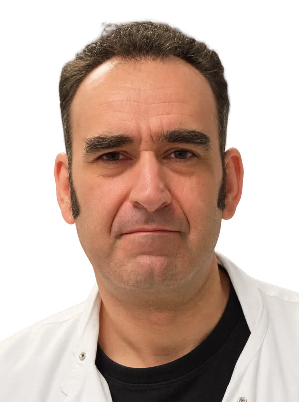
Martin DaleResearch Assistant Research assistant in the TVPlab team at Cambridge.View profile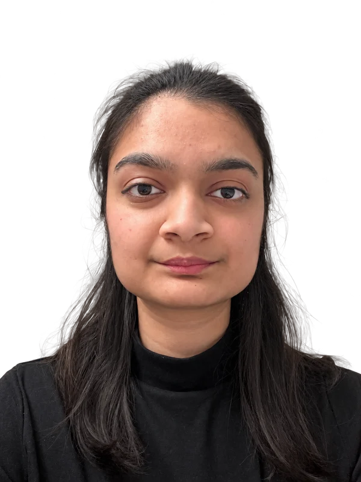
Nazuk GuptaResearch Assistant Investigates nutrient signalling and metabolic dysfunction, with interests in how diet shapes immune function and host–microbe interactions in the gut.View profile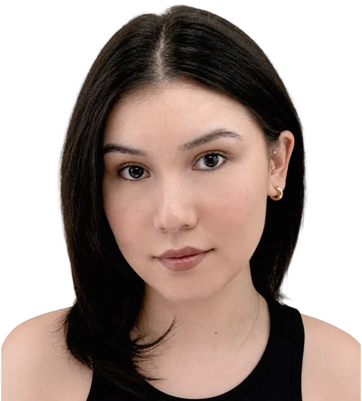
Milidili MaimaitiResearch Assistant Supports studies of adipose tissue and lipid metabolism, with interests in lipid droplets, mitochondrial function and macrophage lipid remodelling in obesity and type 2 diabetes.View profile Cherub Kaida WuPhD · Lab Communication Director
Investigates brown adipose tissue dysfunction in obesity, with broader interests in energy metabolism and cellular organisation. Cherub also serves as the lab's Communication Director.View profile
Cherub Kaida WuPhD · Lab Communication Director
Investigates brown adipose tissue dysfunction in obesity, with broader interests in energy metabolism and cellular organisation. Cherub also serves as the lab's Communication Director.View profile Iman MaliPhD
Uses human induced pluripotent stem cells to study brown fat development, improving brown adipocyte differentiation and characterisation through transcriptomics and biological cryoimaging.View profile
Iman MaliPhD
Uses human induced pluripotent stem cells to study brown fat development, improving brown adipocyte differentiation and characterisation through transcriptomics and biological cryoimaging.View profile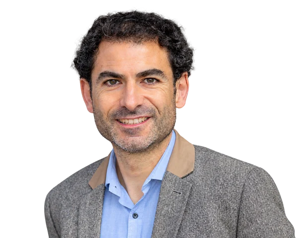
Dr. Rodrigo SantosVisiting Entrepreneur Helps identify opportunities to translate TVPlab discoveries into commercial applications, drawing on experience in cell biology and cell technologies across biotechnology and pharmaceutical research.View profileOur wider community
Former TVPlab members
Celebrating the people who have been part of our laboratory. Roles and affiliations below are recorded as listed on our original website.

Elizabeth Figueroa-Juarez
Former PhD researcher; extracellular matrix remodelling and brown adipose tissue activation.
View profile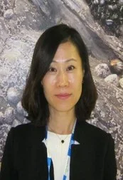
Dr Eunyoung Lee
Former visiting scientist; inter-organ communication in glucose and energy homeostasis.
View profile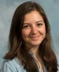
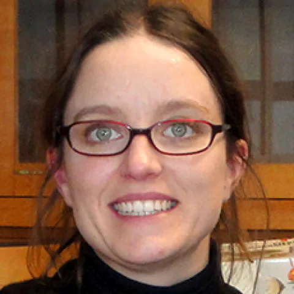
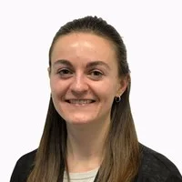
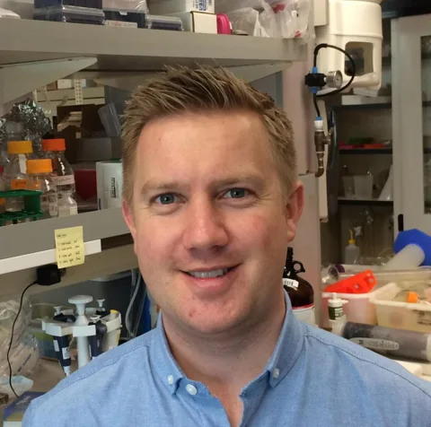
Dr Andrew Whittle
Senior Associate Director, Strategic Partnering · Boehringer Ingelheim · Cambridge, Massachusetts, USA
View profile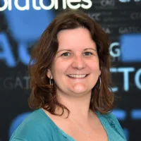
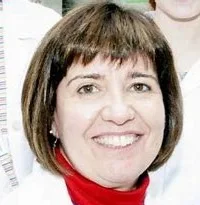
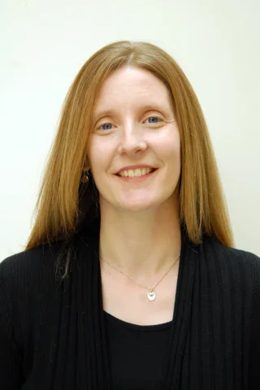
Dr Sarah Gray
Canada Research Chair in Integrative Physiology of Diabetes; Associate Professor, University of Northern British Columbia; Assistant Dean, Curriculum, Northern Medical Program · Canada
View profile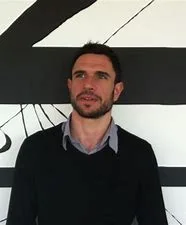
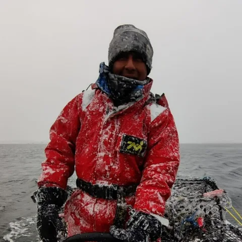
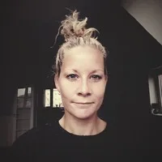
Dr Camilla Ingvorsen
Senior Scientist, Stem Cell Research — Histology & Imaging · Novo Nordisk · Copenhagen, Denmark
View profile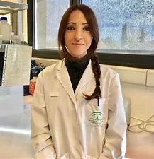
Dr Nuria Barbarroja
Postdoctoral researcher and Miguel Servet grant holder · IMIBIC · Córdoba, Spain
View profile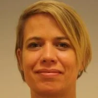
Dr Mirjam Langeveld
Specialist in adult inherited metabolic disorders · Amsterdam UMC · Amsterdam, Netherlands
View profile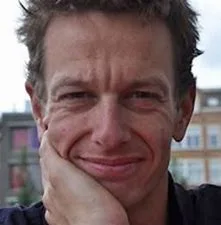
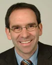
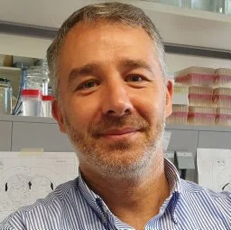